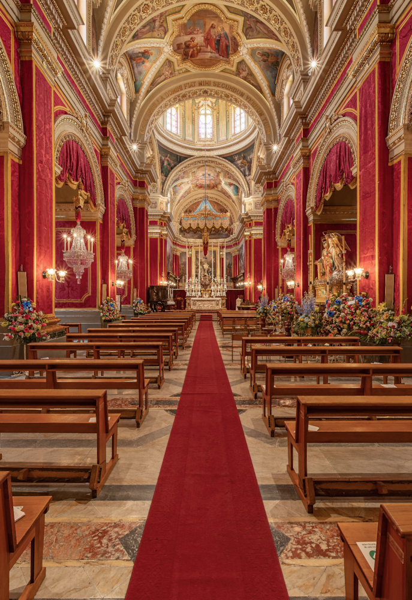

OUR CHURCH · PAINTING AND DEVOTION
Ġanni Vella: The paintings above us
A story of the church’s painted ceilings, its dome and the people who helped bring them to life.
Based on Joseph A. Farrugia’s “Il-pittur Ġanni Vella”, published in Festa Marija Annunzjata 2019, page 39. English summary supplied for this community website.
Read Joseph A. Farrugia’s original article ↗The paintings and their setting
Two colour views from the supplied article PDF. Select either photograph to see the complete image.
 View full photograph ↗
View full photograph ↗

View full photograph ↗Who arranged the paintings?
Joseph A. Farrugia’s 2019 article describes how church procurator Dun Mikiel Vella approached Ġanni Vella to paint the church’s ceiling and dome. Annual fairs and donations from Tarxien residents, including Nikola Mallia, known as ta’ Barbri, helped fund the work. [1]
What does the article describe?
Vella decorated the nave, choir, side-chapel ceilings and dome. The ceiling scenes concern episodes from the Gospel involving Mary. The dome’s theme, Maria Regina, brings together saints, martyrs, prophets and virgins across its eight sections. [1]
The ceiling and dome belong to a wider artistic interior containing work by several artists. A general view of the church should therefore not be read as an attribution of every visible painting to Vella.
CHRISTMAS EVE · 2018
A story to remember
The author recalls the dome’s unveiling on Christmas Eve 2018 after about ten years under covering. Arċipriet Dun Chris Ellul invited children aged twelve and under to unveil it because they had not seen it uncovered. [1]
For those children, it was an opportunity to discover a part of their church that had long been hidden from view.
LOOK UP · EXPLORE IN COLOUR
The church interior and virtual tour
VirtualMalta’s Tarxien Parish Church gallery provides colour views of the nave, ceiling and central dome, alongside a virtual tour. Explore the paintings in their architectural setting on the original website.
Open VirtualMalta’s colour gallery and tour ↗External visual reference: VirtualMalta. The gallery includes works by different artists; individual paintings are not all attributed to Vella.
Sources and acknowledgements
Joseph A. Farrugia, “Il-pittur Ġanni Vella”, Festa Marija Annunzjata 2019, page 39. Published by Parroċċa Marija Annunzjata, Tarxien.
University of Malta repository · original Maltese article and PDF ↗VirtualMalta, Tarxien Parish Church: colour photographs and virtual tour.
Visit the original gallery ↗
This page presents the supplied English summary and credits the original research. It is not a complete reproduction or translation of Farrugia’s article.
More from inside our church
Discover the carved wooden choir stalls and their craftsmanship, or return to the broader history of the parish and church building.
The art of the choir stalls → Our Church and Its History →